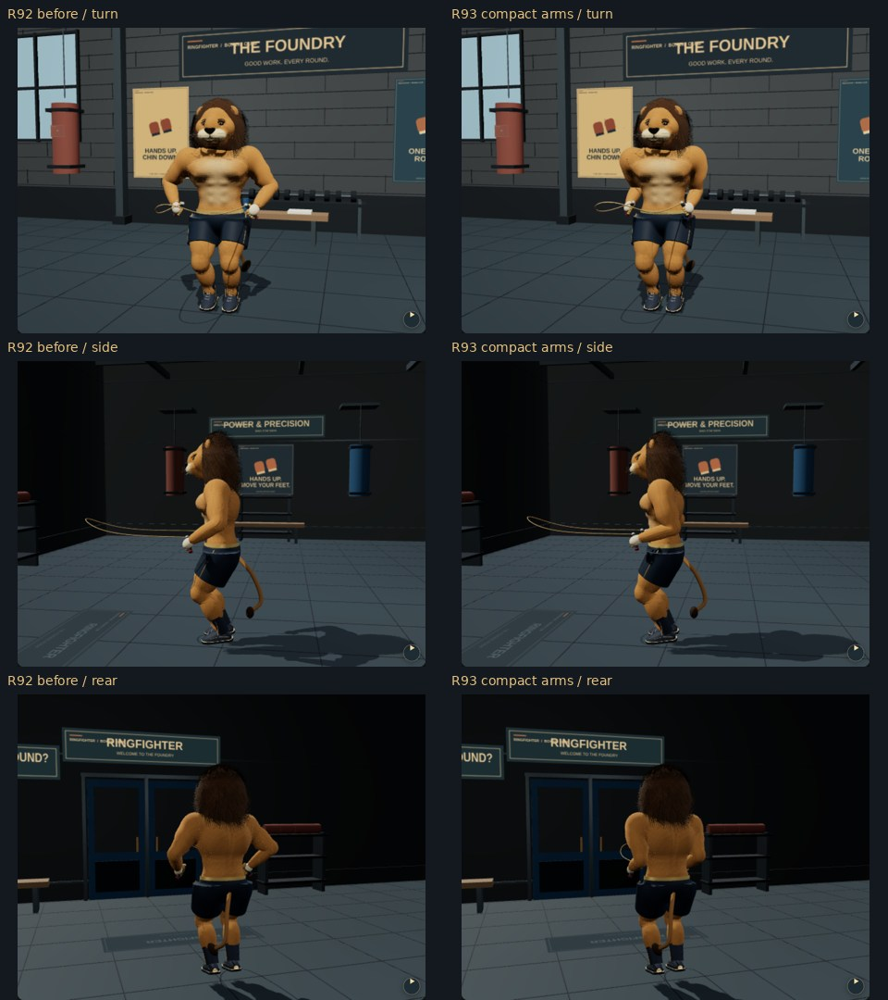
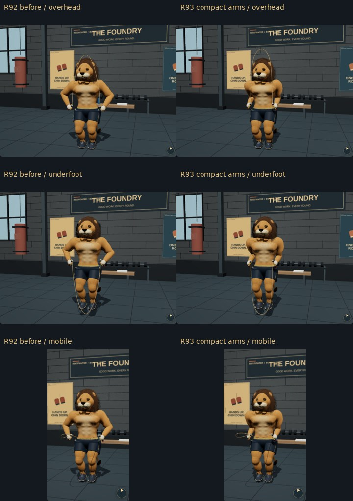

Actual matching R92/R93 app renders. Hands stay beside the hips, elbows tuck toward the ribs, and smaller hand circles retain wrist turns and whole-body loading.


Technique references, method and limits · Validation · Open game
Chromium/SwiftShader, not physical-phone performance validation. These are authored poses, not motion capture.